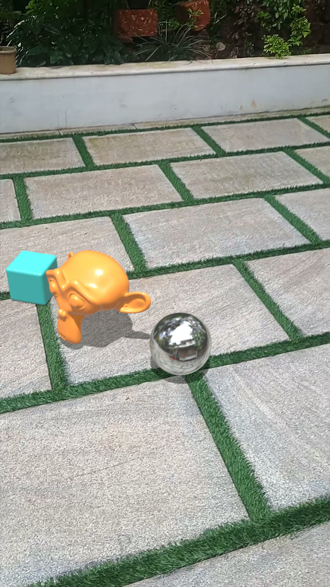
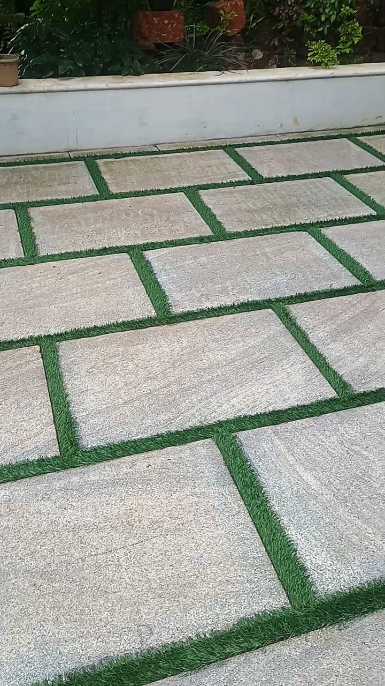
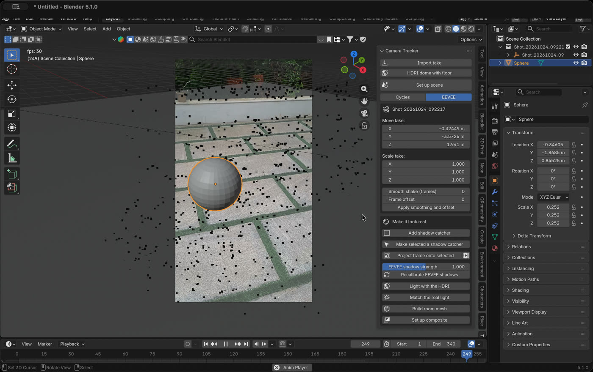

Gecko records your video together with the phone's real 3D camera path. Import the shot in Blender and the camera, the floor, the shadows and even the light are already matched. No solving. No tracking markers to fix.
Free add-on for Blender 4.2 and newer, tested on 5.1.
Film a scene, let Gecko track the camera, import it into Blender in one go. Sound on.
This video was made on a phone with Framelit, another app of mine.


Phone videoBlender renderDrag to compare the same frame
The objects sit on the real tiles, cast real shadows, and stay put while the camera moves. This was a handheld shot on a budget phone, rendered in EEVEE.
The tracked camera, the video plate, a shadow catcher on the real floor and the composite, all set up for you. Everything else lives in the Gecko tab.

One camera pose for every video frame, with the real lens, so 3D never slides.
Metres, gravity aligned, with the floor at zero and the spot you tapped as the centre.
A shadow catcher on the real floor in one click, with self calibration in EEVEE.
Turn around once and the app stitches an HDRI of the spot. Light with it, or match the real sun.
A dome with a real floor, so objects stand on it and cast shadows on it.
A slider smooths small jitters, and a frame offset slides the track if you ever need it.
Open Gecko, move slowly until green dots appear, tap the floor to drop a marker, then record your shot.
Tap Send to computer. You get one zip with the video, the camera path, the lens, the floor and the HDRI.
In Blender, File > Import > Gecko Camera Tracker take. Press Numpad 0, add your 3D and render.
Installing the add-on: download the zip above and keep it zipped. In Blender open Edit > Preferences > Get Extensions, click the arrow at the top right, choose Install from Disk and pick the zip.
Any Android phone that supports Google Play Services for AR. Most phones from the last few years do. The demo on this page was shot on a Moto g54.
Yes. It is plain Python under the GPL licence, so anyone can open the zip and read it. It only reads the video and track files you import, and it never connects to the internet.
No. Nothing is uploaded. A shot leaves your phone only when you send or save it yourself.
Both. Pick the engine in the Gecko tab and the shadow catcher and composite are set up for it.
Blender 4.2 and newer. It is tested on Blender 5.1.
The app is free on Google Play and the Blender add-on is free here.